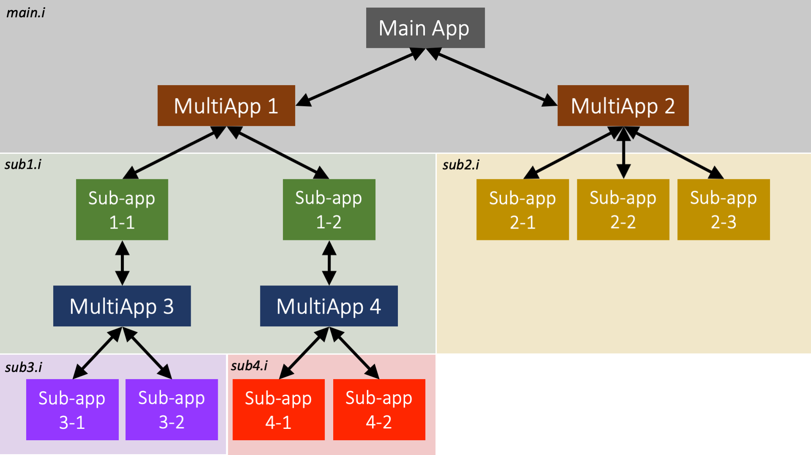

MultiApp System
Overview
MOOSE was originally created to solve fully-coupled systems of partial differential equations (PDEs), but not all systems need to be or are fully coupled:
multiscale systems are generally loosely coupled between scales;
systems with both fast and slow physics can be decoupled in time; and
simulations involving input from external codes might be solved somewhat decoupled.
To MOOSE these situations look like loosely-coupled systems of fully-coupled equations. A MultiApp allows you to simultaneously solve for individual physics systems.
Each sub-application (app) is considered independent. There is always a "main" app that is doing the primary solve. The "main" app can then have any number of MultiApp objects. Each MultiApp can represent many (hence Multi) "sub-applications" (sub-apps). The sub-apps can be solving for completely different physics from the main application. They can be other MOOSE applications, or might represent external applications. A sub-app can, itself, have MultiApps, leading to multi-level solves, as shown below.

Figure 1: Example multi-level MultiApp hierarchy.
Input File Syntax
MultiApp objects are declared in the [MultiApps] block and require a "type" just like any other block.
The "app_type" is the name of the MooseApp derived app that is going to be executed. Generally, this is the name of the application being executed, therefore if this parameter is omitted it will default as such. However this system is designed for running another applications that are compiled or linked into the current app.
Sub-apps are created when a MultiApp is added by MOOSE.
A MultiApp can be executed at any point during the main solve by setting the "execute_on" parameter. MultiApps at the same point are executed sequentially. Before the execution, data on the main app are transferred to sub-apps of all the MultiApps and data on sub-apps are transferred back after the execution. The execution order of all MultiApps within the same execute_on schedule is not determined unless the "execution_order_group" parameter is passed to order the transfers. The order is only relevant for data transfers between applications, notably when data transfers are intermingled with MultiApps execution, see Transfers execution. To enforce the ordering of execution, users can also use multi-level MultiApps or set the MultiApps to be executed at different points with the "execute_on" parameter.
If a MultiApp is set to be executed on timestep_begin or timestep_end, the coupled systems of equations can be solved with Fixed Point iterations, which we refer to as tight coupling. Tight coupling should converge to the same results as full coupling with the proper considerations on time integration and data transfers.
[MultiApps<<<{"href": "index.html"}>>>]
[sub_app]
type = TransientMultiApp<<<{"description": "MultiApp for performing coupled simulations with the parent and sub-application both progressing in time.", "href": "../../source/multiapps/TransientMultiApp.html"}>>>
app_type<<<{"description": "The type of application to build (applications not registered can be loaded with dynamic libraries. Parent application type will be used if not provided."}>>> = MooseTestApp
input_files<<<{"description": "The input file for each App. If this parameter only contains one input file it will be used for all of the Apps. When using 'positions_from_file' it is also admissable to provide one input_file per file."}>>> = 'dt_from_parent_sub.i'
positions<<<{"description": "The positions of the App locations. Each set of 3 values will represent a Point. This and 'positions_file' cannot be both supplied. If this and 'positions_file'/'_objects' are not supplied, a single position (0,0,0) will be used"}>>> = '0 0 0
0.5 0.5 0
0.6 0.6 0
0.7 0.7 0'
[]
[]The input file(s) for the sub-app(s) are specified using the "input_files" parameter. If only one input file is provided, then this input file is used for all sub-apps in this MultiApp.
The ability to specify multiple input files per application, e.g.,
subapp-opt -i input1.i input2.i
will not work correct in "input_files", as each input file in is interpreted as a different application.
Positions
Each sub-app has a "position" relative to the parent app, interpreted as the translation vector to apply to the sub-app's coordinate system to put it in the correct physical position in the parent app. For instance, suppose one is modeling a fuel assembly with multiple fuel rods, and the parent app contains the mesh of the assembly matrix, excluding the fuel rods. A MultiApp can be created where each sub-app corresponds to a single fuel rod. A single input file may be created for a fuel rod, where the rod starts at , and the parent app can specify that multiple instances of this sub-app be created, translated to the correct physical positions in the assembly matrix. See Figure 2 for an example illustration.

Figure 2: Example of MultiApp object position.
The following are the options for specifying the position(s) of the sub-app(s):
Use the "positions" parameter to specify a list of position vectors directly. Each set of three values corresponds to one position vector. For example,
positions = '1 2 3 4 5 6'creates two position vectors, and . If multiple input files are specified via "input_files", then the number of positions vectors must match the number of input files.Use the "positions_file" parameter to specify a list of files containing position vectors. If a single input file is specified via "input_files", then the positions files are treated as if their entries were all in a single positions file. If multiple input files are specified, then each positions file corresponds to an input file. Each positions file must be formatted with one positions vector per row. The entries in each row may be delimited by space, comma, or tab, so long as this is consistent throughout the file. For example, the following creates two positions vectors, and :
1 2 3 4 5 6Use the "positions_objects" parameter to specify a list of names of Positions objects. If a single input file is specified via "input_files", then the
Positionsobjects are treated as if they were merged into a singlePositionsobject. If multiple input files are specified, then eachPositionsobject corresponds to an input file.Omit all of these parameters, which defaults to the single position vector .
Mesh optimizations
The "clone_parent_mesh" parameter allows for re-using the main application mesh in the sub-app. This avoids repeating mesh creation operations. This does not automatically transfer the mesh modifications performed by Adaptivity on either the main or sub-app, though it does transfer initial mesh modification work such as uniform refinement.
When using the same mesh between two applications, with no modification, the MultiAppCopyTransfer may be utilized for more efficient transfers of field variables.
Parallel Execution
The MultiApp system is designed for efficient parallel execution of hierarchical problems. The main application utilizes all processors. Within each MultiApp, all of the processors are split among the sub-apps. If there are more sub-apps than processors, each processor will solve for multiple sub-apps. All sub-apps of a given MultiApp are run simultaneously in parallel. Multiple MultiApps will be executed one after another.
Dynamically Loading MultiApps
If building with dynamic libraries (the default) other applications can be loaded without adding them to your Makefile and registering them. Simply set the proper type in your input file (e.g. AnimalApp) and MOOSE will attempt to find the other library dynamically.
The path (relative preferred) can be set in your input file using the parameter "library_path"; this path needs to point to the
libfolder within an application directory.The
MOOSE_LIBRARY_PATHmay also be set to include paths for MOOSE to search.
Each application must be compiled separately since the main application Makefile does not have knowledge of any sub-app application dependencies.
Restart and Recover
General information about restart/recover can be found at Restart/Recovery. When running a multiapp simulation you do not need to enable checkpoint output in each sub-app input file. The main app stores the restart data for all sub-apps in its file. When restarting or recovering, the main app restores the restart data of all sub-apps into MultiApp's backups (a data structure holding all the current state including solution vectors, stateful material properties, post-processors, restartable quantities declared in objects and etc. of the sub-apps), which are used by sub-apps to restart/recover the calculations in their initial setups. The same backups are also used by MultiApps for saving/restoring the current state during fixed point iterations.
A sub-app may choose to use a restart file instead of the main backup file by setting "force_restart" to true.
"force_restart" is experimental.
Available Objects
- Moose App
- CentroidMultiAppAutomatically generates Sub-App positions from centroids of elements in the parent app mesh.
- FullSolveMultiAppPerforms a complete simulation during each execution.
- QuadraturePointMultiAppAutomatically generates sub-App positions from the elemental quadrature points, with the default quadrature, in the parent mesh.
- TransientMultiAppMultiApp for performing coupled simulations with the parent and sub-application both progressing in time.
Available Actions
- Moose App
- AddMultiAppActionAdd a MultiApp object to the simulation.